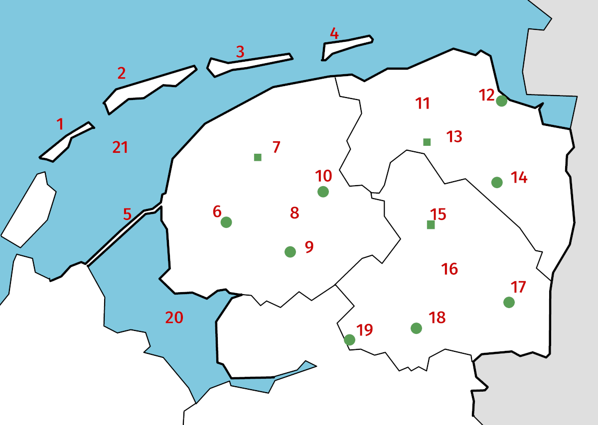

Woordenschat
English, unit 4, lesson 4, Nederlands naar Engels
English, unit 4, lesson 4, English to Dutch
English, unit 3, lesson 4, Nederlands naar Engels
English, unit 3, lesson 4, English to Dutch
Topografie Overijssel, Gelderland, Flevoland
Topografie Friesland, Groningen, Drenthe
English, unit 2, lesson 4, Nederlands naar Engels
English, unit 2, lesson 4, English to Dutch
English, unit 1, lesson 4, Nederlands naar Engels
English, unit 1, lesson 4, English to Dutch
Set 2
Set 1
Antwoorden

Nieuwe zinnen
⬅
Hoofdmenu